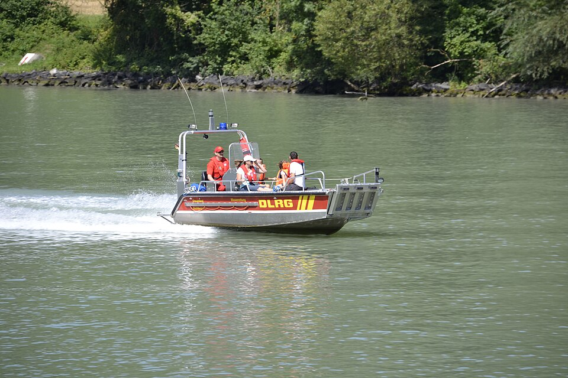

Katastrophenschutz Baden-Württemberg: Einheiten-Erfassungsbogen
Die VwV KatSD — die Verwaltungsvorschrift des baden-württembergischen Innenministeriums über Stärke und Gliederung des Katastrophenschutz- dienstes — beschreibt die Einheiten des Landes als geschlossene Züge mit fest zugeordneter Fahrzeug-Tabelle: Führungseinheit, Brandbekämpfungs-, Löschwasser-, Technische-Hilfe-, Hochwasser-, Gefahrstoff- und Messzüge, dazu Sanitäts- und Betreuungseinheiten, Bergrettung, Luftkrankentransport, Rettungshundestaffel, Wasserrettungs- und Veterinärzug. Dieses kostenlose Online-Tool bringt alle 14 Einheiten bereits als fertige Beispielbögen mit — laden, anpassen, per QR-Code ohne Internet übergeben.

14 fertige Bögen nach der VwV KatSD
Grundlage ist die VwV KatSD vom 24. September 2012 (GABl. Nr. 12/2012, S. 802) mit ihren Anlagen 2 (Brandschutz, Technische Hilfe, ABC-Schutz), 3 (Sanität und Betreuung), 4 (Wasserrettung) und 5 (Veterinärwesen). Anders als in Sachsen oder Niedersachsen zerlegt die Verordnung die Einheiten nicht in unabhängige Teileinheiten — sie stellt jeden Zug als Ganzes mit interner Fahrzeug-Tabelle dar. Deshalb gibt es hier einen Bogen je Einheit, nicht je Trupp oder Staffel:
| Fachdienst | Einheiten |
|---|---|
| Brandschutz, Technische Hilfe, ABC-Schutz (Anlage 2) | Führungseinheit, Zug Brandbekämpfung, Zug Löschwasserversorgung, Zug Technische Hilfe, Zug Hochwasser, Zug Gefahrstoff, Zug Messen und Dekontamination |
| Sanität und Betreuung (Anlage 3) | Einsatzeinheit Erstversorgung, Einsatzeinheit Behandlung, Bergrettungszug, Luftkrankentransporttrupp, Rettungshundestaffel |
| Wasserrettung (Anlage 4) | Wasserrettungszug |
| Veterinärwesen (Anlage 5) | Veterinärzug |
Alle Einheiten werden landesweit in Doppelbesetzung vorgehalten; die Bögen zeigen die einfache Besetzung. In der App findest du sie in der Fußzeile unter „Beispielbögen" → Baden-Württemberg. Jeder Bogen ist ein Startpunkt: Standort, tatsächliche Besetzung und Abweichungen passt du an und speicherst ihn als eigene Vorlage.
Kräfteerfassung im Verband
Zug- und Verbandsführer sammeln die Bögen ihrer Einheiten in der App unter einem Einsatz: Die Stärken werden laufend summiert, mit Zwischensummen je Zug, und der ganze Verband meldet geschlossen weiter — als Sammel-PDF, Datei oder QR-Code. Dieselbe Funktion trägt den Meldekopf am Bereitstellungsraum, wenn Einheiten verschiedener Träger eintreffen.
Gemacht für den Ausfall der Infrastruktur
Katastrophenschutz heißt: Es ist damit zu rechnen, dass Strom, Mobilfunk und Internet fehlen. Deshalb arbeitet die App nach dem ersten Aufruf vollständig offline, speichert ausschließlich lokal und übergibt Bögen per QR-Code von Bildschirm zu Kamera — ohne Server, ohne Kopplung, ohne Netz.
Häufige Fragen zu den BW-Vorlagen
Sind die Vorlagen amtlich?
Nein — sie sind aus der öffentlich zugänglichen VwV KatSD abgeleitet und sorgfältig geprüft, aber kein amtliches Dokument. Maßgeblich bleibt die Verwaltungsvorschrift selbst; deshalb kannst du jede Vorbelegung frei anpassen.
Stimmt die Zuordnung zu Landkreisen genau mit der Verordnung überein?
Bei den meisten Einheiten ist der Standort beispielhaft gewählt — real und plausibel über alle vier Regierungsbezirke gestreut, aber nicht Zeile für Zeile der Verordnungstabelle entnommen. Personalstärke und Fahrzeuge dagegen sind verordnungsgenau und werden beim Erzeugen der Bögen automatisch geprüft.
Welche Organisationen deckt der Bogen ab?
Alle BOS und Hilfsorganisationen: Feuerwehr, THW, DRK (inklusive Bergwacht), Johanniter, Malteser, ASB, DLRG, Rettungsdienst, Polizei und Bundeswehr. Eigene Einstiege gibt es für das THW, die Feuerwehr, die DLRG, das DRK, die Johanniter, die Malteser und den ASB. Weitere Bundesländer und ihre Katastrophenschutz-Vorlagen findest du auf der Katastrophenschutz-Übersicht.
Was ist mit anderen Bundesländern?
Weitere Landesvorlagen liegen für Bayern, Berlin, Brandenburg, Hessen, Mecklenburg-Vorpommern, Niedersachsen, Nordrhein-Westfalen, Rheinland-Pfalz, Saarland, Sachsen und Thüringen bereit — eine Übersicht gibt die Seite Katastrophenschutz der Länder. Fehlt deins, kannst du jeden Bogen frei ausfüllen und selbst als Vorlage speichern.